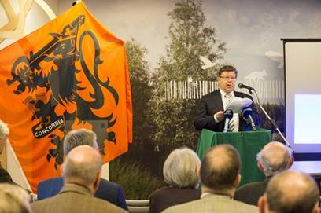
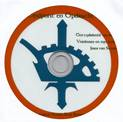

Wie zijn exemplaar
van deze prestigieuze uitgave al veilig stelde heeft het
ondertussen in zijn bezit.
Wie zijn exemplaar
van deze prestigieuze uitgave al veilig stelde heeft het
ondertussen in zijn bezit.
> nieuwsbrief > 2015 - nr 1
Inhoud
Hernieuwen
ledenbijdrage voor 2015
Terugblikkend op de uitdagingen van 2014 – met het Colloquium Joris van
Severen en de publicatie van de langverwachte
fotobiografie over Joris
van Severen en zijn beweging - mogen we beide realisaties
als zeer geslaagd beschouwen. Dit extra omvangrijke nummer
getuigt daarvan. In 2015 kunnen we dan ook met een gerust gemoed
teruggrijpen naar de geplogenheden van voorheen, zijnde het
uitbrengen van een ‘gewoon’ jaarboek – het 19e al – en het
publiceren van onze driemaandelijkse Nieuwsbrief
in zijn nieuw voorkomen. Dit brengt met zich
mee dat we ook inzake ledenbijdrage voor 2015 kunnen terugvallen
op 29 € als minimumbijdrage (waarin uiteraard begrepen
jaarboek en Nieuwsbrief).
Uw bijdrage graag via onze rekening IBAN: BE71 0001 7058 1469 -
BIC: BPOTBEB1..
Het jaarboek 2015
zal uiteraard onder meer de integrale teksten bevatten die op
het colloquium aan bod kwamen (en waarvan u in deze uitgave
alvast de syntheses leest). Voor tal van lezers vormt deze Nieuwsbrief een eerste
kennismaking met het Studiecentrum Joris van Severen en zijn
werking. We verhopen, mede met het oog op onze verdere plannen
hun belangstelling te kunnen opwekken. .
Verslag 6e Colloquium
Joris van Severen
Op zaterdag 25 oktober 2014
ging andermaal een Colloquium Joris van Severen – het 6e in de
rij - door. Plaats van het gebeuren was Van Severens
geboorteplaats Wakken. Aansluitend werd daar ook de grote Fotobiografie over
Joris van Severen en zijn beweging voorgesteld.
Hieronder
brengen we u – naast het welkomstwoord de syntheses van de
referaten; ze zullen in hun geheel opgenomen worden in het Jaarboek
Joris van Severen
2015.
Koenraad Degroote, burgemeester
Beste aanwezigen,
Collega's parlementsleden en mandatarissen,
Leden van het Studiecentrum Joris van Severen en
vooral u die hier bent vol interesse voor de geschiedenis.
Zowat twee jaar geleden werd mij aangekondigd dat er
terug in Wakken een colloquium zou georganiseerd worden rondom
het leven en werk van Joris van Severen. In het millenniumjaar
2000 was dit hier ook het geval.
Aldus werd mij twee jaar terug door Maurits Cailliau
namens het Studiecentrum gevraagd om het welkomswoord te
verzorgen. Deze eenmalige vraag werd toen door mij onmiddellijk
positief beantwoord.
De laatste dagen kreeg ik echter zo'n tiental vragen
en/of aanbevelingen of ik wel zou gaan naar zo'n colloquium om
een voorwoord te richten en of ik niet beter afwezig zou
blijven. De laatste dagen kreeg ik ook circa 100 verontwaardigde
reacties van burgers die mij
op het hart drukten om aan dergelijke oproep niet toe te geven.
Deze reacties kwamen van mensen met diverse overtuigingen.
Rekening houdend met een en ander heet ik u als
burgemeester van het Westvlaamse Dentergem hartelijk welkom in
onze deelgemeente Wakken - waar Mandel en Leie samenvloeien - en
hier in dit prachtige bezoekerscentrum Baliekouter.
Wakken is voor de meesten onder u niet onbekend.
Sommigen onder u zullen zich Wakken herinneren als het dorp waar
zij in hun jeugd-jaren vakantiekampen meemaakten in het
plaatselijk vakantiehuis achtereenvolgens genoemd Huize
Marienhove, Huize Daels en Huize Verschaeve. Aldaar konden zij
naar hartelust spelen in de kelders van het kasteel, de hovingen
errond, in de omgeving van de schandpaal of in de grote en
kleine kasteelvijvers.
Sommigen onder u die meer literaire interesse hebben,
zullen Wakken kennen als het dorp van de rederijkers. Het dorp
van waaruit Pieter-Joost de Borchgrave - dichter-rederijker –
die in de periode van de preromantiek literaire successen
verzamelde in de wedstrijden van die tijd.

Burgemeester Koenraad Degroote aan het
woord tijdens z’n welkomstwoord, met opzij de ‘Leo
Belgicus-vlag, met de 17 pijlen van de historische
Nederlandse provincies.(Foto ‘Het Nieuwsblad’)
Andere literaire kenners onder u denken aan eminente
figuren als André Demedts die hier school liep en woonde op een
boogscheut van dit bezoekerscentrum. Of aan Luc Verbeke (hier
geboren in 1924) en stichter-bezieler van het Komitee voor
Frans-Vlaanderen. Of aan Gwy Mandelinck (alhier geboren in 1937
onder de naam Guido Haerynck) en naast dichter alom bekend als
de organisator van de kunstzomers en poeziefestivals in de
Westhoek (Watou).
Degenen onder u die interesse hebben voor geschiedenis
en cartografie kennen Wakken als het geboortedorp van Judocus
Hondius (°1563). Hij maakte naam zowel in Engeland als in
Nederland in de periode van ontdekkingsreizen en kolonisatie.
Ook de gravure van Wakken in Antonius Sanderus’ Flandria
illustrata zal bij velen geen onbekende
zijn.
Degenen onder u die vertrouwd zijn met kerkelijke en
Vlaamse geschiedenis, weten dat er zich op het einde van de 19e
eeuw binnen de kerk een democratische stroming aftekende van
volkspriesters die zich afgezet hebben tegen de toenmalige
conservatieve kerk. Ook in Wakken kenden we toen de figuur van
pastoor Hugo Verriest (1888-1895) die zich als een ware herder
begaf tussen arme en zieke mensen – op gevaar van eigen
gezondheid. Tevens ontving hij in zijn pastorie of onder de
tulpenboom verschillende Vlaamse vooraan-staande intellectuelen
van het genootschap De Swighenden Ede.
Maar ongetwijfeld kent iedereen onder u, Wakken als de
geboorteplaats van Joris van Severen (alhier geboren in 1894);
de persoon over wie dit colloquium gaat.
Joris van Severen, die in mei 1940 te Abbeville werd
vermoord samen met verschillende andere lotgenoten. Een bloedbad
dat ondanks tussenkomst van toenmalig parlementair P. Nothomb
niet kon vermeden worden en waarvoor de Belgische overheid zich
nader-hand verontschuldigd heeft.
Kortom, beste aanwezigen. Gelijk wat uw band is met
Wakken of hoe u Wakken kent, u bent hier welkom in deze “aangenaam plek oft
vryheid" zoals Sanderus het ooit omschreef.
Hoewel Joris van Severen reeds 74 jaar overleden is,
had ik de laatste dagen de indruk dat hij levendiger was dan
ooit. Ik denk niet dat ik u hieromtrent meer verduidelijking
hoef te geven. Het aantal vermeldingen in de diverse media
spreekt voor zich.
Van Severen is een figuur die zorgt voor controverse.
Dit doordat hij evolueerde van Vlaams-nationalist naar
verdediger van de neutraliteitspolitiek van Leopold III en
verdediger van de Heel Nederlandse gedachte
(Belgie-Nederland-Luxemburg) later overgenomen door notoire
politici als o.m. P.H. Spaak. Aldus zorgt hij bij historici voor
blijvende vragen en discussies.
Het doorgronden daarvan - in de hoop tot klaardere
conclusies te komen - die misschien moeilijk te geven vallen -
is de taak van historici, wetenschappelijke en academische
instellingen en ook het Studiecentrum dat zijn naam draagt.
Het is de bedoeling in alle objectiviteit diepgaande
historische studie te verrichten en te peilen naar wat deze
figuur bezielde. Dit moet kunnen gebeuren op een serene en
objectieve manier zodat pro en contra aan bod kunnen komen.
Kortom historisch verantwoord onderzoek, dit is wat
moet kunnen. Objectieve analyses maken zonder te oordelen of te
veroordelen maar ervoor te zorgen dat alle gegevens voorhanden
zijn zodat uit-eindelijk de "Tijd" en de "geschiedenis" hun werk
kunnen doen en een finaal besluit kunnen trekkken.
Op dit vlak had ik de laatste dagen enkele onaangename
ervarin-gen. Ik had stellig de indruk dat bepaalde media het
waardeoordeel wilden overlaten o.a aan mijzelf (die daarvoor
niet geplaatst ben) terwijl sommige van die media al zelf een
premisse stelden die geen ruimte laat voor nuance. Volgens mijn
bescheiden mening behoort zoiets niet tot hun taken.
Beste aanwezigen, ik ben ervan overtuigd dat degelijk
en objectief studiewerk tot jullie mogelijkheden behoort. Dit
zeg ik u rekening houdend met de ervaringen die ik heb als
burgemeester van deze gemeente zowel omtrent de werking van het
Studiecentrum als van het plaatselijk Komitee Wakken Herdenkt.
Het is immers niet de eerste keer dat in deze gemeente
iets georganiseerd wordt omtrent Joris van Severen of het
Verdinaso. Aldus wil ik u een kleine opsomming niet onthouden:
·
In 1981 kreeg een
straat hier de naam “Joris van Severen laan"
·
In 1982 werd aan het
geboortehuis in de Molenstraat een plakket aangebracht. Trouwens
wil ik hier de aanwezigheid melden van de bewoner van het
geboortehuis dr. Roland Bekaert (86 jaar) de persoon die
jarenlang bezieler is geweest van diverse activiteiten
dienaangaande.
·
In 1984 was er de
grote tentoonstelling Verriest-Van Severen-Verdinaso onder
leiding van dr. Bekaert.
·
Sedertdien waren er
diverse organisaties o.a eucharistievie-ringen na de bedevaart
in Abbeville; voordrachten; toneel van Antoon van Vlimmeren;
tentoonstellingen; permanente tentoonstelling in de
Kapellestraat; het colloquium anno 2000 e.d.
Allemaal activiteiten waar de pers niet massaal
aanwezig was of alles minstens positief onthaald werd.
Deze persbelangstelling van toen staat in schril
contrast met de interesse van de afgelopen dagen. Een verklaring
hiervoor kan mogelijks zijn dat men ook inziet dat objectief
historisch onderzoek met afwe-ging van pro en contra
noodzakelijk is. Dit zou mij als objectief toeschouwer gelukkig
stemmen.
Moest deze grote belangstelling echter op andere
redenen gegrond zijn zoals sensatie of eerder platte
partijpolitieke redenen, zou ik dit enorm betreuren.
In ieder geval wens ik alle aanwezigen een geslaagde
studiedag toe. Wegens diverse verplichtingen kan ikzelf het hele
programma niet volgen maar hoop u zeker terug te zien bij de
afsluitende boekvoor-stelling van het werk van Pieter Jan
Verstraete en Maurits Cailliau.
Tot deze namiddag en dank voor uw aandacht.
Een onderzoek naar de Europese gedachte bij het Verdinaso
Tom Cobbaert
[samenvatting]
Rondom
de Europese verkiezingen van 25 mei 2014, die uitdraaiden op een
overwinning voor de overwegend radicaal-rechtse euro-sceptische
partijen, verschenen in de (internationale) pers een aantal
artikels waarin het euroscepticisme van deze partijen verklaard
werd door hun populistische en/of nationalistische opvattingen.
Het politieke veld, denk maar aan de waarschuwing van Herman van
Rompuy, hanteerde een gelijkaardige argumentatie. Dat daarbij al
te makkelijk generalisaties worden gemaakt, laten we voor wat
het waard is. Al zou het zonder twijfel interessant zijn om het
Europees discours van een partij als het Vlaams Belang grondig
en inhoudelijk te analyseren.
Uit
historisch oogpunt is het echter vooral jammer dat de artikels
over het euro-scepticisme van radicaal-rechts niet reflecteren
over een eventuele historische evolutie op dat vlak. Dat de
relatie tussen de Europese gedachte en radicaal-rechts ook
anders kan ingevuld worden is echter een aspect dat ook in de
historiografie lange tijd genegeerd werd.
Pas
vanaf de jaren 1990 gaat het onderzoek verder dan karikaturale
theses en worden de radicaal-rechtse opvattingen over Europese
samenwerking ernstig bestudeerd. In Walter Lipgens Documents on the history of
the European Integration wordt er al enige aandacht
gegeven aan de plannen die tijdens de Tweede Wereldoorlog
ontstonden in nazi-Duitsland en fascistisch Italië. Ook Peter
Stirk en Michael Smith focussen in hun publicatie Making the New Europe
eveneens op het discours in de periode 1939-1945, maar hebben de
verdienste voorbij te gaan aan de Europese idee als louter
propagandamiddel.
In
1993 neemt de eminente Britse historicus Roger Griffin het
onderzoek naar een nieuw niveau met zijn nog steeds relevante
paper Europe for the
Europeans: fascist myths of the New Order. Hij breidt het
onderzoeksveld uit naar enerzijds de voor- en naoorlogse periode
en anderzijds de andere rechts-radicale bewegingen in Europa,
zij het summier. Zo verwijst Griffin naar de rol van de VMO en
Were Di als spil in een Europees netwerk van radicaal-rechtse
bewegingen. De opleving van dit onderzoeksveld inspireert verder
ook geëngageerde academici zoals John Laughland tot
euro-kritische publicaties als The Tainted Source.
Sinds
de paper van Griffin verscheen er een resem aan studies over de
diverse aspecten van Europese gedachte en radicaal-rechts, maar
zowel de Vlaamse casus als het aspect van evolutie bleven
daarbij onderbelicht. Het dichtst in de buurt van de Vlaamse
casus komt Robert Grunert met zijn doctoraat Der Europagedanke
west--europäicher faschistischer Bewegungen 1940–1945.
Daarbij onderzoekt hij een Nederlandse, Belgische en Franse
casus. Voor België wordt geopteerd voor Rex. Het VNV komt echter
zijdelings aan bod via de casussen NSB en Rex, terwijl het
Verdinaso, nochtans één van de eerste fascistische organisaties
in België, amper vernoemd wordt. Deels niet verrassend gezien de
tijdsvork van het onderzoek, maar wel een verlies voor een
breder comparatief onderzoek.
Onderzoek
van het tijdschrift Hier
Dinaso! levert namelijk een aantal vaststellingen op. Op
basis hiervan kunnen we het Europese discours van het Verdinaso
groeperen in een viertal thema’s: oorlog en vrede, cultuur,
economie en (inter)nationalisme.
Oorlog
en vrede in Europa was, gezien de Spaanse Burgeroorlog, een
evident wederkerend onderwerp. Voor het Verdinaso was de vorming
van Dietsland noodzakelijk voor de toekomst van Europa. Een
verenigd Dietsland kon, als neutrale vijfde macht, de sleutel
zijn voor de Europese vrede en nieuwe conflicten tussen de
Europese staten voorkomen.
Daarnaast
speelde, gezien de crisis van de jaren 1930, ook de Europese
economie een grote rol. Europese economische samenwerking werd
al snel noodzakelijk geacht. Zonder een duidelijk en eenvormig
beleid zou de Europese economie onder de druk van de Amerikaanse
en Aziatische economieën snel verschrompelen. Daarenboven was
een economische onafhankelijkheid wenselijk, vooral met de
eventuele blokkade die met de groeiende oorlogsdreiging gepaard
ging. Op het einde van de jaren 1930 kwamen medewerkers van Hier Dinaso!,
geïnspireerd door buitenlandse publicaties, met het voorstel van
een economische grootruimte voor de dag. De Europese economische
samenwerking zou in dat geval steunen op een sterk leiderschap,
solidaire overeenkomsten en multilaterale handel.
De
tegenstelling tussen Europa en de natie vormde een vierde rode
draad doorheen dit deel. Bij het Verdinaso waren er hierover
echter tegengestelde meningen te horen. Volgens één medewerker
verschilde een Europees denken fundamenteel van
internationalisme en veronderstelde Europa vooral een gezond
nationaal bewustzijn. Zodoende konden alleen sterke nationale
staten een belangrijke rol spelen in de Europese politiek.
Daartegenover stond een artikel dat internationalisme en
nationalisme net niet als tegengestelden zag. Internationalisme
zoals het Europees federalisme kon naties samenbrengen in een
groter Europees geheel met behoud van hun eigenheid. Een
Europese samenwerking kon wel pas tot stand komen na een
verzoening tussen de nationale en de Europese belangen. Volgens
een derde bijdrage was die samenwerking dan weer altijd gedoemd
te mislukken. De grote nationale staten zouden nooit
gemeenschappelijke belangen kunnen delen met kleine staten. In
een groter samenwerkingsverband zouden deze laatste steeds het
slachtoffer zijn. Eens het land bezet was verschoven de
opvattingen nog verder. Waar het Verdinaso eerst een sterk
Dietsland in een Europese gemeenschap voorstond, werd het in het
najaar van 1940 pleitbezorger van een hiërarchisch Europa onder
leiding van het Germaanse volk, waar het Dietse volk
logischerwijs deel van uitmaakte. Met deze omslag naar een
Germaanse retoriek voegde een deel van het Verdinaso zich bij
het Groot-Duitse discours dat zich vanaf de zomer van 1940
manifesteerde bij het VNV.
Het
onderzoek gevoerd op basis van Hier Dinaso! is echter
maar een eerste luik van een mogelijk breder onderzoek. Zo biedt
het aan de KULeuven ontsloten archiefmateriaal mogelijkheden
voor een diepgaandere discoursstudie en netwerkanalyse.
Belangrijker vormt het Verdinaso ook een unieke casus voor een
studie naar de evolutie en continuïteit van het Europese
discours en netwerk. Het is namelijk één van de weinige
rechts-radicale bewegingen in Europa dat zich na 1945
ideologisch relatief eenvoudig aanpaste en zich duidelijk
identificeerbaar, zij het in verschillende gedaanten,
(her)organiseerde. Het is, zelfs zonder diepgravend onderzoek,
duidelijk dat er hoe dan ook duidelijke sporen van een Europese
gedachte zijn terug te vinden bij de naoorlogse Dinaso’s. De
vraag stelt zich echter in welke mate dit discours zich verhoudt
tot vooroorlogse opvatting en onderhevig is aan de tijdsgeest,
maar dat vergt dus nog enig onderzoek.
Joris
van Severen in
het brede Europese perspectief
Luc Pauwels
[samenvatting]
Hebben vergelijkingen zin?
De
vergelijking van Joris van Severen met tijdgenoten uit andere
landen wordt door zijn bewonderaars niet altijd enthousiast
onthaald. Ik heb hierover destijds heel wat discussie gevoerd
met o.m. André Belmans (1915 - 2008) en Rudy Pauwels (1932 -
2008), een neef van Joris van Severen, mensen voor wie ik
overigens alle achting heb. Ze stonden echter beiden op het
standpunt dat Van Severen absoluut uniek was en niet
vergelijkbaar met wie dan ook. Uiteraard is iedere mens “uniek”,
maar dat belet niet dat we mensen kunnen vergelijken en daardoor
meer inzicht verwerven in hun motieven en hun wezen. Ik ben van
oordeel dat we deze poging moeten wagen en voel me gesteund door
die andere eminente Van Severen-kenner, Jef Werkers (1911 -
2004), die er voorzichtig maar duidelijk positief tegenover
stond.
Je kan
Joris van Severen minstens op drie vlakken met een aantal van
zijn tijdgenoten vergelijken. Vooreerst is er het perspectief
van zijn gewelddadige dood. Ten tweede is er het
wereldbeschouwelijke vlak: wat was zijn ideologische
achtergrond, waar lagen zijn inspiratiebronnen? Ten derde: wat
was de basis van zijn levensstijl, welke invloeden, welke
voorbeelden hebben hier gespeeld? En zijn die vergelijkbaar met
de levenshouding van anderen?
Zijn gewelddadige dood
We
kunnen de omstandigheden waarin Joris van Severen om het leven
werd gebracht in bepaalde mate vergelijken met de moord op
Corneliu Zelea Codreanu (1899 – 1938), de stichter en
leider van de Roemeense IJzeren
Garde.
Ook
denken we aan de veroordeling door een “volkstribunaal” en de
wederrechtelijke executie van José Antonio Primo de Rivera
(1903 - 1936), de oprichter van de Spaanse Falange. Beide
terechtstellingen leren ons veel over het politieke klimaat in
Europa op het einde van de jaren ’30, maar uit de parallellen
inzake hun gewelddadige dood mag men geen identieke
wereldbeschouwing of politieke ideologie afleiden.
Zijn ideologische bedding
We
willen Joris van Severen graag spiegelen aan drie Europese
tijdgenoten, respectievelijk de Duitser Artur Mahraun
(1890 - 1950), stichter en “Hochmeister” van de Jungdeutsche Orden.
Verder de Franse auteur en politieke vrijbuiter Pierre Drieu
la Rochelle (1893 -1945) en tenslotte een Engelse
tijdgenoot, nl. Anthony M. Ludovici (1882 - 1971),
tijdens het interbellum een vooraanstaand filosoof, socioloog en
politiek auteur. Alle drie hebben ze, zoals Joris van Severen,
de verschrikkingen van de Eerste Wereldoorlog ondergaan aan het
front.
Alle
drie behoren ze tot de conservatieve
revolutie, de grote ideologische tegenbeweging die zich vanaf het
einde van de 19e eeuw tegen de gevolgen van de Franse Revolutie
keerde. Wat de protagonisten van de conservatieve revolutie
voorstonden was geen terugkeer naar een of ander Ancien régime, maar een
wereldbeschouwelijke revolutie die marxisme en liberalisme
evengoed bestreed als het burgerlijk-reactionaire kamp. De
Franse Revolutie werd niet ervaren als de basis van de
democratie, maar integendeel als verwekker van wat Van Severen
noemde “de demo-liberale wanorde”. De échte, organische
democratie was in hun ogen zeker niet egalitair en wortelde in
de geleidelijke evolutie naar meer volks-medezeggenschap, zoals
we die in onze steden en gouwen hebben gekend sinds de
Middeleeuwen.
Dictatuur
en caesarisme, voor-geëxerceerd door het fascisme en het
nationaalsocialisme, wekten in hun aanvangsstadium soms enige
sympathie, maar uiteindelijk scheidden de wegen zich vroeg.
Terecht schrijft Filip Martens in zijn studie De verloren erfenis van het
Verdinaso. Een
overzichtsgeschiedenis van het naoorlogse
Heel-Nederlandisme en solidarisme: ”Na 1934
plooide hij (Joris van
Severen) stelselmatig terug op een Heel-Nederlands
revolutionair conservatisme, waarbij de katholieke fundamenten
het haalden op de nationaalsocialistische en fascistische modes.
Zijn laatste ontwikkelingsstadium vertoont sterke gelijkenissen
met de Franse en Duitse Jong-Conservatieven”, zijnde een van de
geledingen van de conservatieve revolutie.
Zijn levenshouding
Een
beroemd boek van Anthony M. Ludovici heet The Quest of Human Quality,
op zoek naar menselijke kwaliteit. Dit is een van de permanente
themata geweest in het leven van Joris van Severen. Alhoewel hij
erg vaak werd bewonderd en gehuldigd om zijn aristocratische
levensstijl, zijn moedig, consequent en integer gedrag, is er
zelden of nooit enig onderzoek gebeurd naar de bronnen van deze
levenshouding. Ze trachten te verklaren door louter aanleg en
persoonlijkheid volstaat niet. Welk intellectueel stramien
onderbouwde deze levensstijl? Welke krachtlijnen, welke
voorbeelden waren bij hem aan de orde? We geven hier enkele
denkpistes mee, meer niet. Het onderzoek moet nog beginnen.
Eerst
en vooral waren er de jezuïeten op het Sint-Barbaracollege in
Gent: een opvoeding gebaseerd op het Vince teipsum, “overwin
uzelf” van Ignatius de Loyola.
Op de
Gentse universiteit begon hij aan zijn kandidaturen Wijsbegeerte
en Letteren (1912-1913) waar hij kennis maakte met de stoa,
Zenon, Seneca, Epiktetos, en vooral de keizer-filosoof Marcus
Aurelius. Verder werd hij onderwezen in de deugdenethiek van
Aristoteles (Ethica
Nicomachea) die zich richt op het karakter als de drager
van wat moreel goed of slecht is.
Vanaf
1914 was zijn harde leerschool natuurlijk het leger en “die
vervloekte oorlog”. Na de frontervaring kwam de moeilijke
terugkeer naar het burgerleven: de vijand nam een andere
gedaante aan. Zoals Hendrik de Man in zijn “Herinneringen”
schreef: “Wie dit boek gelezen heeft zal geen moeite hebben om
deze tegenstanders te herkennen. Het zijn de Gepantoffelde
Huichelaars van Rabelais, de Gewichtigen van Alain, de
Burgers-die-laag-bij-de-grond-denken van Flaubert, de
Medelijdenden-zonder schaamte en de Veel-te-talrijken van
Nietzsche.”
Joris
van Severen las Nietzsche in de loopgraven. We zien hem en zijn
levensstijl beeldrijk weerspiegeld in dit citaat van Nietzsche
uit Morgenrood
(556):
“De goede
vier. – Eerlijk tegenover
onszelf en tegenover alles wat verder gevoelens van
vriendschap bij ons oproept; dapper tegenover de
vijand; grootmoedig
tegenover de overwonnenen; hoffelijk – altijd: zo
willen de vier kardinale deugden ons hebben.”
En
tenslotte was er, misschien verrassend, Franz Kafka, waarvan
deze éne uitspraak moge volstaan:
Niet iedereen kan de waarheid kennen,
maar iedereen kan waarheid zijn.
Nabeschouwingen van een toehoorder
Ik was in Wakken
Wakken, een deelgemeente van
Dentergem, is het geboortedorp van Joris van Severen
(1894-1940). Daar hield het naar hem genoemde Studiecentrum een
colloquium, ingeleid door burgemeester Koen Degroote. Die brave
man heeft het geweten: alweer een N-VA-er, ook nog Kamerlid, die op een
extreemrechtse bijeenkomst te zien was! En die partij zit nu
in onze regering! Ik wil de N-VA graag dekking langs links
geven: ik was ook in Wakken en ik ben niet eens rechts,
hoogstens soms een beetje conservatief. Ter compensatie van
vermeende rechtse sympathieën moet ik nu ook bekennen dat ik
nog dit jaar in ‘Den Tat‘ in Dilbeek op een studieavond van
het Masereelfonds geweest ben. Dat zijn de ouwe rakkers van de
andere kant.
Ik heb aan beide kanten aardige
mensen ontmoet, gemiddeld van mijn leeftijd (60+), en in
overgrote meerderheid van mijn kunne (mannelijk). Af en toe
spreek ik wel eens voor een serviceclub over mijn werk en daar
is het ook al niet anders. (…)
Terug
naar Wakken. Was Joris van Severen een fascist? De
Standaard
ondersteunde dat beeld met een foto van vermeende
Verdinaso-leden in 1939 in een erg ‘Duits’ lijkend uniform
en met gebalde opgeheven vuist. [Die foto toonde overigens
geen Dinaso-militanten, maar wel geüniformeerde leden van de
linkse USAF-militie! - nvdr] De krant zegt er niet bij dat
in de jaren dertig van de vorige eeuw iedere organisatie op
straat kwam in uniform en met een eigen groet. “Naar historische maatstaven was Van
Severen inderdaad een fascist”, dat vond spreker Tom Cobbaert toch. “Wees
toch voorzichtig met zulke etiketten”, repliceerde
spreker Luc Pauwels, “hij
noemde zichzelf alvast niet zo, en een deel van zijn
aanhang ging ook in het verzet.”
Ikzelf, in mijn jonge jaren (1968)
heb het begrip geleerd van oudere studenten die eerste minister
Paul Vanden Boeynants de grootste fascist noemden (weliswaar op
hun eigen autoritaire vader na). Later is gebleken dat dat
woord, als scheldwoord voor de slechteriken van de oorlog, door
Oost-Berlijn gelanceerd is. Voor de Sozialistische Einheitspartei
Deutschlands was
‘nationaalsocialist’ geen geschikt scheldwoord want dat deed
teveel aan hunzelf denken. In ieder geval hebben die woorden
een heel andere geladenheid gekregen ná de oorlog dan ervoor.
Door toedoen van Berlijn en Moskou heeft het woord fascist
voor mij en mijn generatie de inhoud gekregen van elk
autoritair regime dat ‘de anderen’ liquideert. Zo te zien
waren Mao Zedong en Pol Pot de grootste ‘fascisten’ van mijn
tijd. Tegenwoordig moet dat één of andere islamitische kalief
zijn (weliswaar op de burgemeester van Dentergem na) .
Als je Laurette Onkelinx in de
Belgische Kamer van Volksvertegenwoordigers bezig zag, is de
grote 20e-eeuwse burgeroorlog nog altijd niet ten einde. Zij en
haar aanhang willen die oorlog (tussen links en rechts) liefst
meteen hervatten, allicht tegelijk met een hervatting van de
gewelddaden van 1830 tegen alles wat uit het Noorden kwam en
tegen iedereen die daarmee samenwerkte. Waarom niet beginnen met
een aanval op de lokalen van de tegenstander? De aanhangers van
Mussolini deden het voor in april 1919 met een aanval op de
lokalen van de krant Avanti in Milaan, waarbij vier
doden vielen.
Karel
Anthonissen
[Geplukt uit ’t
Scheldt, nr. 1164,
p. 2]
Aansluitend
op het colloquium werd het 18e Jaarboek
Joris van Severen – zijnde de grote fotobiografie waarvan
hieronder sprake – voorgesteld.
Fotobiografie Joris van Severen
De langverwachte Fotobiografie is er!
Het ingebonden boek steekt vanzelfsprekend in een Dinaso-groene
harde kaft, met een oranje stofwikkel. Met zijn royale
afmetingen van 24 x 29,7 cm, 248 pagina’s en niet minder dan 648
illustraties in vierkleurendruk is het een alom geprezen
prachtuitgave geworden.
Wie zijn exemplaar
van deze prestigieuze uitgave al veilig stelde heeft het
ondertussen in zijn bezit.
De voorintekeningstermijn voor de fotobiografie is
inmiddels vervallen. Sindsdien geldt de prijs van 55 € (+ 10 €
verzendkosten voor wie dit wel aparte jaarboek via de post wenst
te ontvangen). De Fotobiografie
leent zich overigens ook uitstekend als relatiegeschenk.
Meerdere leden bestelde in dit perspectief meer dan een
exemplaar.
Bijlage aan de Fotobiografie:
DVD ‘Eindpunt en Opdracht’
Naar
aanleiding van het traditionele bezoek aan de graven van Joris
van Severen en Jan Ryckoort van 1987 werd door het toenmalige
Nationaal Studie- en Documentatiecentrum Joris van Severen een
video aangemaakt, gerealiseerd door de studioploeg van Rudi
Reussens. Deze video waarop historische filmbeelden over het
Verdinaso afwisselen met beelden van de herdenking in 1987,
maakt als DVD-bijlage deel uit van de Fotobiografie en geeft
het boek aldus een sterke meerwaarde. Bovendien werden aan de
‘reportage’ van 1987 originele filmbeelden toegevoegd van
jeugdkampen van het Jong- Dinaso.
De Nieuwe Orde volgens Maurice de Wilde
Vik Eggermont
Nu
heeft de VRT nog eens een echt-oude koe uit de stal gehaald! Een
heruitzending van de reeks “De Nieuwe Orde” door krijgsauditeur Maurice
de Wilde uit de jaren stillekes. Maar ja, wat wilt u, de VRT
heeft geen centen en wij mogen ons dus de komende herfst en
winter aan nog meer van dergelijke oude dingen verwachten. U
weet “herh.” staat er dan in de krant bij en dat wil zeggen:
herhaling
Op
eerste zicht zou men blij kunnen zijn. Op die wijze komen het
Verdinaso en Joris van Severen tenminste nog eens in beeld bij
de Openbare Omroep. Jammer alleen dat wij enkele negatieve
facetten ook voor lief moeten nemen. Als dit blij zijn waar is, dan
is het wel spijtig dat het zo laat aan bod kwam. Veel
Canvas-kijkers zullen dan al naar bed zijn gegaan.
Vooreerst
omdat met het wetenschappelijk onderzoek over oorlog,
buitenparlementaire oppositie in het interbellum en
collaboratie, dat sindsdien is gebeurd – en dat is niet weinig -
uiteraard geen rekening wordt gehouden, geen rekening meer kán
worden houden. Ik denk dat alle figuren die in de uitzending ten
tonele gevoerd worden en die destijds onderworpen werden aan het
onverbiddelijke requisitoir van Maurice de Wilde allemaal al
geruime tijd overleden zijn.
Vervolgens
omdat de destijds gevoerde tactiek van vriend De Wilde gewoonweg
perfide was. Hij stak alles in één zak. In de uitzending die ik
gezien heb (ik twijfel er aan of ik de volgende, gezien het late
uur, nog zal bekijken – het gooit het bioritme van iemand van
mijn leeftijd totaal overhoop) kwamen Joris van Severen, Staf
Declercq en zijn VNV, personen die handelden uit idealisme of
uit louter winstbejag, spionnen voor de Sicherheitsdienst,
zuivere nationaalsocialisten, Jodenhaters en nog zo veel meer,
ze kwamen in één uitzending allemaal aan bod. Zonder veel
rekening te houden met de sfeer en de toestanden van die
troebele jaren of zonder veel onderscheid. Het leek mij meer op
het zoeken naar schuldigen, dan op het zoeken naar waarheid.
Alsof de “democratie” in die jaren zo maagdelijk zuiver was en
een en ander daardoor wel begrijpelijk maakte. Inzake Jodenhaat
bijvoorbeeld hebben de democratische staten van die dagen ook
wel boter op het hoofd.
Over
Van Severen. Ik vind het fundamenteel oneerlijk iemand als Jan
Servaes, die de juiste draagwijdte van de dinaso-leer
klaarblijkelijk niet begrepen had, te laten zeggen: nationaal-solidarisme en
nationaal-socialisme, wat is het verschil? Zonder dat De
Wilde hem op de onjuistheid van zijn woorden wees, want hij wist
perfect dat dit niet waar was, hij had Van Severen wel degelijk
gelezen. Hij had op zijn minst een tegenspreker moeten oproepen.
De
dinaso’s die achteraf hun huik naar de wind hingen en die er
politiek wel bij gevaren zijn, zij kregen destijds graag de
absolutie van het regime, zij kwamen bij hem wél aan het woord.
Als ge immers bereid waard zijt om een knieval te doen voor de
partijen, dan werd u veel vergeven. De dinaso’s die de leer van
Joris van Severen trouw bleven en die niets te maken hadden met
sabotage van het Belgisch leger, verklikking, al of niet
betaalde hulp aan Duitse geheime diensten of wat nog al, kregen
die kans niet.
En als
er nu nog enige bijstelling voor de kijker van vandaag bij ware
geweest, maar dat was niet het geval. Het kan dan ook niet
anders of het besluit van de kijker van 20, 30 en zelfs nog
ietwat oudere leeftijd, moet zijn: het was alles één pot nat:
allemaal verraders.
De naam van Guido van Gheluwe (Kortrijk 3
april 1926 – Kortrijk 1 oktober 2014) blijft onverbrekelijk
verbonden met de door hem in 1955/1956 gestichte Orde van den Prince, die
intussen uitgroeide tot
het grootste grensoverschrijdende Heel-Nederlands geïnspireerd
genootschap. Dat Guido van Gheluwe die Heel-Nederlandse
bezieling ontleende aan zijn eertijds lidmaatschap van het Jong-Dinaso is allicht
minder bekend, ook al werd destijds in de Kroniek van de Orde van
den Prince (1990) eerder omfloerst genoteerd dat “de jonge Van Gheluwe
bewondering had voor bepaalde ideeën van Joris van Severen, de
verfijnde West-Vlaming met Groot-Nederlandse idealen, die
hoewel uit Franstalige bourgeoisie afkomstig, zich met hart en
ziel zou inzetten voor de verheffing van het Vlaamse volk, en
ijverde voor het tot stand komen van een Vlaamse elite….”
De
Orde stoelde in haar aanvang op een Keure, waarin we o.m.
lezen dat de Orde tot doel heeft:
De studie, de
belijdenis en de uitbouw
hier in den
lande van de Nederlandse gedachte
in het
persoonlijk, gezins- en gemeenschapsleven.
Omtrent
de ‘Levensstijl van de
Orde’ werd toen gesteld:
Geloof in de
onverwoestbare eenheid
en de zending
van de Nederlanden.
Fier en
voornaam optreden, een Prinsenvolk waardig.
Bewuste
gemeenschapshouding.
Doorleefd
gevoel van kameraadschap
die geeft en
eist.
Trouw en
tolerantie naar Oranjes geest.
Formuleringen
waarin oud ADJV’ers (Algemeen Diets Jeugdverbond) letterlijke
zinsneden uit hun
Keure en hun
Levenswet terugvinden!
Bovenaan
zijn overlijdensbericht lazen we – traditiegetrouw voor
voormalige Dinaso’s - de aanvangsverzen van de zesde strofe van
het Wilhelmus: ‘Mijn
schild ende betrouwen zijt Gij o God mijn Heer’.
In
hoever de hierboven aangehaalde zinsneden uit de aanvankelijke Keure en Stijl van de Orde nog
richtinggevend zijn voor de Orde anno 2015, is voor vele
waarnemers een open vraag.
Luk Dieudonné (Borgerhout 25 juli 1955 – Borgerhout 24 november
2014) overleed op al te jonge leeftijd. In zijn jonge jaren was
hij actief in de Heel-Nederlandse Solidaristische Beweging en
haar militantenorganisatie onder leiding van Maarten van Nierop.
Sinds lang was hij als hoofdredacteur verbonden aan het
tijdschrift Bormshuis-Broederband,
vereniging waarvan hij trouwens ondervoorzitter was. Hij was
sinds jaar en dag lid van ons Studiecentrum.
|
·
Jaargang |
Auteurs |
Leden-prijs |
Niet-leden |
|
·
jaarboek
3 - 1999 ·
272
pagina’s |
Luc Pauwels, De ideologische evolutie van Joris van Severen |
25 € |
30 € |
|
·
jaarboek
4 - 2000 |
10 € |
15 € |
|
|
·
jaarboek
5 - 2001 |
10 € |
15 € |
|
|
·
jaarboek
6 - 2002 |
10 € |
15 € |
|
|
·
jaarboek
7 - 2003 |
10 € |
15€ |
|
|
·
jaarboek
8 - 2004 |
10 € |
15 € |
|
|
·
jaarboek
9 – 2005 Oorlogsdagboek ·
536
pagina’s |
Joris van Severen, Die vervloekte Oorlog |
30 € |
35 € |
|
·
jaarboek
12 - 2008 |
15 € |
20 |
|
|
·
jaarboek
13 – 2009 |
15 € |
20 € |
|
|
·
jaarboek
14 - 2010 |
15 € |
20 € |
|
|
·
jaarboek
15 - 2011 |
15 € |
20 € |
|
|
·
Jaarboek
16 - 2012 |
|
20 € |
25 € |
|
·
Jaarboek
17 - 2013 |
|
25 € |
30 € |
|
·
Jaarboek
18 – 2014 Fotobiografie - albumformaat |
M. Cailliau & P.J. Verstraete |
55 € |
65 € |
PS: de hierboven niet vermelde jaarboeken
zijn uitgeput. De opgeheven prijzen dienen per 2 jaarboeken
verhoogd te worden met 5 € verzend kosten; voor de
omvangrijke Fotobiografie bedragen deze 10 €.
In deze rubriek verwijzen we zonder veel commentaar
naar recente publicaties waarin Joris van Severen en/of het
Verdinaso vermeld worden. We citeren de meest treffende
passussen woordelijk zonder daarin volledigheid na te streven.
We verzoeken onze lezers, met ons, uit te zien naar
publicaties die voor deze rubriek 'stof' kunnen leveren en ons
kopie van de betreffende passages toe te sturen.
Bij wijze van commentaar n.a.v. de hetze
rond ons colloquium
"De
intellectuelen hebben het meest invloed wanneer zij dus een
positief project hebben. Geduld is evenwel hun lot. De grote
intellectuelen hebben meer duurzame roem dan de meeste politici.
Wie zal zich herinneren wie minister was in de zoveelste
regering Martens? De namen van Lodewijk de Raet, Pater Stracke,
Van Severen e.a. zal men zich blijven herinneren."
___________
Herman
van Rompuy in: Het christendom, een
moderne gedachte. p. 97. Uitgave
Davidsfonds, Forumreeks, 1990.
Uit
de Duitstalige wereld
Bei den flämischen Jungkonservativen tat vor allem
Joris van Severen es ihm [Vermeylen] gleich. In seinem
richtungweisenden, 1924 erschienen Essay Vlaamsch-Nationalisme,
in dem er nachdrücklich Bezug auf Vermeylen nimmt, stellt er
sich auf folgenden Stand-punkt: “Die wachsten Geister dieser Zeit wissen es und sehen
es: mit unserer Generation – die der in 1914 zwanzigjährigen –
versucht eine klassische Epoche Bahn zu brechen. (…) Wenn der
Nationalismus uns keine Methode, kein Element einer Methode
beibringt für eine klassische Europa-Architektur, dann zum
Teufel mit dem Nationalismus. Wenn wir mit dem Nationalismus
etwas anderes wollen als den Aufbau in unserem Kreis, in unserem
Vaterland, mit unserer Kraft von einem Teil klassisches Europa,
dann sollten wir besser Landwirtschaft betreiben. Das wird
nützlicher sein. Gerne erkläre ich denn auch, daβ eine der stärksten
Beweggründe weshalb ich ein Nationalist bin, mein Glauben in der
europäischen Konstruktivität des Nationalismus ist.“ (p. 203-204)
Der am
stärksten von jungkonservativen Ideen geprägte flämische
Persönlichkeit in der Zwischenkriegszeit, und nahezu der einzige
der richtig Schule gemacht hat, ist Joris van Severen
(1894-1940) - schon die Schlüsselbegriffe Ordnung und Elite, die Sorge um
Stil und Lebenshaltung, das typisch juristisch-strukturierende
Denken, das ihn so sehr von den dauerprotestierenden und
–manifestierenden Flämisch-Nationalen unterscheidet, die Neigung
auf den rechten Flügel des Establishments Gesprächspartner zu
suchen, das alles spricht für diese Einschätzung.
Van
Severen kommt als flämischer Nationalrevolutionär zurück aus den
Schützengraben des Ersten Weltkrieges, aber auch als
unerschrockener Offizier. Der nationalrevolutionäre Elan ist ihm
schnell nicht mehr genug, er will aufbauen. Nach einer
völkischen Phase fand er in der jungkonservativen Richtung sein
eigentliche geistige Heimat, aber er bleibt lebenslang ein
Eklektiker mit einer eigenen, originellen und sich weiter
entwickelnden Ideenwelt.
Überraschend
bei Van Severen war etwa die Parallele mit dem Reichsgedanken
der jungkonservativen der Weimarer Zeit: er wies die “Eine
Sprache - Ein Volk - Ein Staat“-These von der Hand und sucht
nach einem historischen Modell für eine höhere Ordnung, fernab
von dem jakobinischen Staat Belgien, der ihm ebenso unannehmbar
ist. Nicht zufällig greift er zurück auf die Niederlande in
ihrer traditionellsten Form, den Burgundischen Reichskreis, initiiert von Jakob
van Artevelde (1290–1345) und formal erst 1806 aufgehoben. Joris
van Severens Argumentation für seine gesamtnieder-ändische
Perspektive im Sinne der historischen “Siebzehn Provinzen“ und
gegen ein bloβ sprachkundliches Staatsstreben ist im Wesen
identisch mit er von den deutschen jungkonservativen Denker
Edgar J. Jung gegen die Völkischen und für den Reichsgedanken.
Von den französischen Jungkonservativen um Charles Maurras
unterscheidet ihn, dann wieder, daβ er nicht die Nation als
“höchste Form der menschlichen Organisation“ sieht, sondern Europa
- die “klassische Europa-Architektur“ die wir am Anfang schon
erwähnt haben. (pp. 230-231)
____________
Bron: Karlheinz Weiβmann
(Hrsg.), Die Konservative Revolution in Europa,
Institut für Staatspolirik, Schnellroda, 2013, alwaar (pp.
197-244), Luc Pauwels, Die
Konservative Revolution in Flandern und den Niederlanden.
Engagements pour la civilisations européenne
“(…).
Curieusement, le fascisme italien nous laissait plutôt
indifférent, peut-être en raison des stupides préjugés
anti-italiens solidement ancrés dans la mentalité française. A
tort, nous ne prenions pas Mussolini au sérieux. Hitler nous
emblait impardonnable non pas d’avoir voulu briser les chaînes
di traité de Versailles, mais d’être resté prisonnier d’une
vision étroitement nationaliste et, plus encore, d’avoir
discrédité pour longtemps des idées justes. Nous leur préférions
l’espagnol José Antonio, le flamands Joris van Severen,
théoricien du nationalisme thios, ou des écrivains allemands
comme Ernst von Salomon ou Ernst Jünger. (…)”
_______________
Bron: Jean-Claude
Valla (1944-2010), Engagements pour la
civilisation européenne, Ed.
Alexipharmaque, 2013, p. 85.
Aan het
IJzerfront
“Begin
mei 1918 werd de jonge onderluitenant Joris van Severen bij een
generaal ontboden, die hem erop wees dat hij het voordeel had
Vlaamstalig te zijn, want, bevestigde de generaal, je hebt wel
80 tot 85% Vlamingen in je peloton. De generaal wist het dus
maar al te goed!”
_______________
Herman Verstraete op:
http://www.nieuws.be/nieuws/De_mythe_van_de_Vlaamse_jongens_aan_het_IJzerfront_0a85d08e.aspx